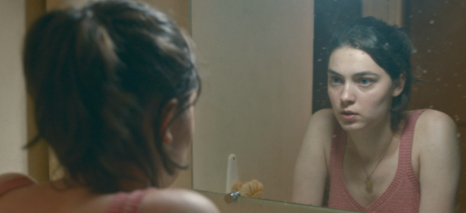

The Killer Inside Me
Both merciless and humane, Happening presents abortion in the spirit of Simone de Beauvoir in the Manifesto of the 343—as something necessary to allow women the ability to realize their full potential as citizens.

It’s possible to believe that aesthetics should not take a back seat to politics and still, when
things are dire, feel the pull of artists who choose urgency over nuance. Political and moral
conviction can drive artists to good work, even if that work has no wish to understand its villains
except as paragons of cruelty and power.
In the aftermath of the Supreme Court coup against Roe v. Wade, which Justice Clarence Thomas has
suggested is an advance motion to turn the United States into a fundamentalist Christian theocracy,
we’ll be lucky if we get partisan filmmaking as passionate and humane as Emma Pildes and Tia
Lessin’s documentary The Janes, about the band of Chicago women who, in the years before Roe, came
together to provide and eventually perform abortions for women in need of them. They had all worked
in the antiwar movement, and many of them describe how they were made subordinate to their male
colleagues. In an exhilarating moment, one of the Janes remembers a meeting in which a group of
women were wondering how they could remain activists without getting the chauvinist brush off. “I
know. You can become abortion counselors,” she recalls saying, and her mischievous smile conveys the
pure pleasure to be had in defying both a law and a social order designed to crush your liberty.
The flipside of that pleasure, and another kind of triumph, can be found in the French director
Audrey Diwan’s Happening, which won the Golden Lion at last year’s Venice Film Festival. It’s hard
not to think Diwan was freer to be an artist because France is not currently facing a backlash
against abortion. In fact, this past March, the country extended the period in which an abortion can
be obtained, from twelve weeks to fourteen weeks, and made it easier for women to access medicines
to induce abortion.
Happening, which is based on Annie Ernaux’s slim and admirably uningratiating memoir of her own
experience trying to obtain an abortion as a young literature student, is set in 1963. That’s twelve
years before abortion became legal in France. And it’s eight years before the Manifesto of the 343,
a letter published in Le Nouvel Observateur, written largely by Simone de Beauvoir and signed by,
among others, Catherine Deneuve, Marguerite Duras, Jeanne Moreau, Monique Wittig, and Agnes Varda.
All of them declared they had broken the law by having had an abortion. Much of the rage directed at
the recent Supreme Court ruling has centered on public intrusion into a private decision. De
Beauvoir’s much tougher and more far-reaching insistence was that abortion was a necessity for women
to be able to fully participate in society as citizens.
Both merciless and humane (maybe the best combination for a movie, and the hardest to achieve),
Happening presents abortion in the spirit of de Beauvoir in that manifesto—as something necessary to
allow women the ability to realize their full potential as citizens. Anne, played by Anamaria
Vartolomei, appears as an early combatant in public wars that are only going to become fiercer.
Vartolomei doesn’t present Anne as enlightened and superior, but the film shows us what happens when
a smart person apprehends the pettiness and cruelty that masquerade as decency and morality and can
only despise it—especially when she is the target of that pettiness and cruelty. In this country,
where we have been so routinely admonished to consider the feelings and motives of the bigoted and
ignorant, Happening’s unapologetic “contempt for the contemptible” (in Paul Fussell’s words) is
bracing.
None of the characters here are caricatures, and Diwan treats them with as much generosity as the
situation allows her to muster. She shows us the troubled decency of the doctor who wants to help
Anne but is afraid of going to jail. The male student who comes on to Anne, arguing her pregnancy
means there’s no risk to sex, is also the one who sets her on the path to getting an abortion. And
the abortionist herself, a former nurse who performs the procedure in her modest, clean,
working-class apartment, is neither a predatory hack nor a warmhearted dispenser of mercy, like the
title character of Mike Leigh’s Vera Drake (2004). She’s doing it for the money, without anesthetic,
and she tells Anne that any outcry of pain will mean she stops and sends her away. The only fully
despicable creature is the older doctor who offers Anne medicine he tells her will help her
menstruate. Later we find out he’s given her something to strengthen the fetus, and that this was
common among French doctors, most of whom were opposed
to abortion.
With Anne, we feel disgust at an entire country that accepts sexual hypocrisy and limits on women’s
freedom. And it’s not just men who dish out that hypocrisy. One of Anne’s friends happily straddles
a pillow to demonstrate sex, but when, during an evening at a local disco, Anne wants to go off with
a handsome young fireman, that same friend is there to stop Anne from committing this affront to
morality (and, it’s implied, from letting her go off with a working-class man). Other women in
Anne’s class warn her about how her willingness to be sexually open brings shame on them all.
A French filmmaker adapting a French memoir for a French audience does not have to point out what
that audience would grasp instinctively: that this is all taking place in a Catholic country. In
Happening, Church repression has sunk into the country’s collective bones, even among girls out to
dance and meet boys. Early on, one of Anne’s classmates is called on to stand and explicate a poem.
The young woman has nothing to say, and after she sits down, another classmate whispers that the
young woman is getting married, implying she will no longer have any need for education.
This is exactly what Anne cannot tolerate. The cinematographer Laurent Tangy often holds Vartolomei
in tight close-up, an effective way of keeping us within Anne’s head. I don’t think there’s a moment
in Vartolomei’s performance where we can’t both see her thinking and, because we feel so in tune
with her, seem to know what she’s thinking. Happening is, in essence, the story of someone who
determines that she is going to live as a subject rather than an object. Feminist thought has long
insisted on such self-determination, but it feels utterly novel—and even inspiring—to see a
character live out exactly what that means without being turned into a martyr or put on a pedestal.
It’s Anne’s dogged refusal to let anyone else set the terms of her existence that gives Happening
the shock of the new. When Anne mentions that she would like to have children one day, the line
isn’t thrown in as a sop to motherhood meant to soften Anne’s choice. She offers it as a decision
she will make when and if she chooses. For now, that fetus is the killer inside, the invader ready
to supersede everything she envisions for herself.
This is much blunter than what we’ve seen in American movies that, at least in part, have dealt with
abortion. And it would be too easy to use Happening as a cudgel to criticize what other films didn’t
do. But those movies weren’t necessarily timid. Even in the years before Roe, abortion was not a
forbidden subject in American film, nor was it condemned. Instead, it was depicted as a fact
embedded in American life—a reality acknowledged even if it was not enshrined in law.
Often these movies were made by directors who understood how to convey meaning without violating the
strictures laid down by the Motion Picture Production Code, which was adopted in 1934. There’s a
heartbreaking scene in George Stevens’s A Place in the Sun (1951) in which a pregnant and unmarried
Shelley Winters goes to a kindly old family doctor and is told that he and his wife didn’t know how
they were going to provide for their children, but that things have a way of working themselves out.
The doctor isn’t a cruel man, but the way Stevens frames the shot from behind means he appears as a
black shadowy mass at the edge of the screen threatening to swallow up this desperate young woman.
A friend of mine, a female film critic, recently said to me that, yes, abortion was present in films
of the past, but no one wound up getting one. That changed after Roe v. Wade. Take Dirty Dancing,
which came out in 1987 but portrays life before Roe. You could object that abortion is just a device
that allows the upper-middle-class doctor father to discover the decency of his daughter’s
working-class beau. But it was also part of the normalization of abortion: the subplot focuses on
the shoddy and dangerous options open to the girl who needs the abortion, rather than presenting her
plight as a cause for shame.
Five years earlier, Fast Times at Ridgemont High got an X rating for showing a high school student
played by Jennifer Jason Leigh getting an abortion. The scene was cut so the movie could get an R
and a teenage audience could see it. What remains, though, is remarkable. Leigh emerges from the
clinic alone, only to find her brother waiting to give her a ride and offer support. Most important,
he recognizes the abortion as his sister’s choice and nothing their parents need hear about.
For me the most striking abortion scene from the post-Roe era is in the 1975 trucker-vigilante movie
White Line Fever, in which the hero’s wife confesses to her brother that she’s pregnant and, though
she wants a kid, is going to have an abortion so her husband doesn’t work himself sick trying to
provide. The movie’s melodramatic violence winds up meaning she doesn’t need one, but the point of
the scene is this woman’s insistence on her choice, and her refusal to apologize for treating the
decision to have a baby as a practical one. That this appeared in a movie only two years after Roe,
and one marketed to drive-ins and grindhouses (with an audience that was largely Southern,
Midwestern, working class, and male), suggests just how widely abortion was accepted.
The Motion Picture Production Code ended in 1968, so it didn’t hinder the portrayal of abortion in
those movies. But artistic freedom doesn’t always lead to art. And if the choice is between
Hollywood and something like Eliza Hittman’s Never Rarely Sometimes Always (2020), please God, give
me Hollywood. The movie does provide some good information about what someone who lives in a place
where abortion isn’t available has to go through to get one. The teenage protagonist encounters
women at the anti-choice clinic in her working-class Pennsylvania town, each of them—to use Camille
Paglia’s phrase—a “beaming Betty Crocker,” conspicuously past the age of childbearing. The trouble
is that the filmmaking is so indie bland and the lead, Sidney Flanigan, so blank and closed to the
camera that sitting through the movie feels like doing penance.
Nothing in that picture’s determined drabness can compare to the abortion sequence in 1963’s Love
with the Proper Stranger, a romance about a single Italian-American woman, played by Natalie Wood,
who works at Macy’s and becomes pregnant by Steve McQueen’s womanizing jazz musician. The movie is a
strange mix of the gritty and the formulaic. But the scene where McQueen takes Wood to get an
abortion imprints itself on your spine. After knocking on the door of an apartment in a dingy
tenement, they wait for an eternity, giving them (and us) plenty of time to suspect that the hood
they’ve paid to set this up has absconded with their money. But the door opens, and McQueen is kept
in another room while a terrified Wood is badgered to get out of her nice-girl bandana and good
winter coat by a woman who sets out a thin blanket and various instruments on an unswept wooden
floor. We are still in the days of the production code, so what we see can only suggest what’s ahead
for Wood. But the director Robert Mulligan comes up with a touch that conveys a looming violation: a
powerful flashlight, which provides the abortionist’s only illumination. You see it and think of
similar lights being used in jail breaks or interrogations, and you have a sense of how much of a
prisoner Wood is at that moment.
Wood has been accused of being limited as an actress, but she had a talent for portraying raw fear
and hysteria. When McQueen, frightened of what’s going to happen to her in such a shabby setup,
breaks into the room, she’s catatonic. She doesn’t hear him when he tells her to get her clothes on.
After a quick slap to bring her around, all the pent-up terror inside her breaks, and she begins
screaming, “No! No!” In one of his greatest moments on screen, McQueen, desperate to assure her
she’s not about to become the next victim of these hacks, hugs her fiercely and swears, “I’ll kill
’em before I let them touch you!” The naked emotion is shocking. Neither Wood nor McQueen are
protected here by their movie star glamour. You can complain that Wood’s character doesn’t get the
abortion, or that McQueen’s actions represent some sort of paternalism. But your gut tells you
you’re seeing this woman’s life on the line. This, the movie tells us, is the reality too many women
faced, and too many didn’t survive.
The sequence in Happening where Anne tries to induce an abortion isn’t visually explicit. We see her
preparing the instruments, arranging her body. After that the focus is on her face. But the scene
prompted walkouts at the Venice Film Festival press screening (someone I knew who was there told me
it was only men who left), and when I saw the movie at the IFC Center in New York, there was a
placard at the box office warning ticket buyers. It’s not an easy scene to watch. I have never been
intimidated by any movie that tries to bully the audience by implying we’re made of soft stuff if we
look away, and I didn’t want to look away here. I was too caught up in the story and too invested in
seeing what Vartolomei would do. And yet I can’t recall any other movie making me feel that, even if
I had wanted to look away, I didn’t have the right. Something even harder awaits: a scene where a
character who has been especially disapproving of Anne is forced to deal with the reality of what
she’s gone through—and has the humanity to rise to the moment. The scene could seem finger-wagging,
but both the intent and effect feel much more hardheaded.
In an introduction she and Vartolomei filmed for American theaters, Diwan said that her intent in
making the movie was to show the reality of what awaited women in a time and place where abortion
wasn’t easily available. There’s no question that Diwan favors abortion rights, and that she’s made
a film to express that. But an artist who calmly and unflinchingly lays out the consequences of the
situation she dramatizes is operating very far from the constraints of ideology, or even the
sometimes humane impulse behind ideology. Happening is the triumph of a citizen who’s thinking like
an artist.